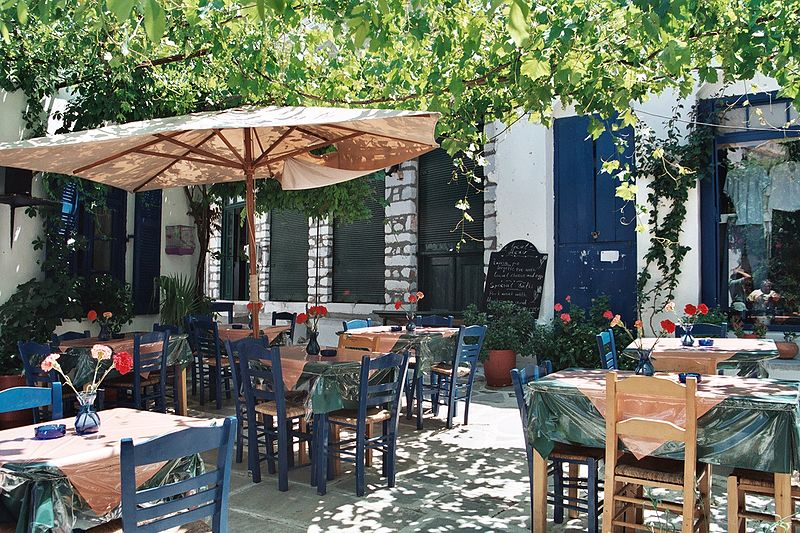

Culture

The roots of Western culture are in Greece. Step into the ring where Olympians first competed. Climb steps hewn out of stone to Meteora’s monasteries, perched atop towering rocks. Contemplate the oracle’s insights from the grandeur of Delphi, take in a starlit drama at an ancient outdoor theatre and be stunned by massive marble sculptures dredged up from the Aegean. But then you’ll encounter bold modern art, the melancholic throb of rembetika (blues songs) and artisans creating new work from traditional techniques. Greece has endless cultural pursuits and a calendar bursting with festivals, holidays and exhibits.